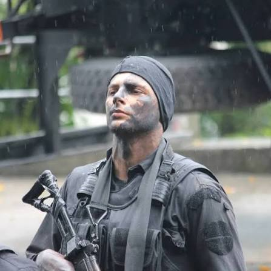

Conceito de Disciplina
Disciplina é a obediência ao conjunto de regras e normas estabelecidos por determinado grupo. Também pode se referir ao cumprimento de responsabilidades específicas de cada pessoa, Do ponto de vista social, a disciplina ainda representa a boa conduta do indivíduo, ou seja, a característica da pessoa que cumpre as ordens existentes na sociedade.Neste aspecto, o oposto de disciplina é a Indisciplina, quando há a falta de ordem, regra, comportamento ou de respeito pelos regulamentos.
Como dito, cada grupo social apresenta o seu conjunto de normas e regras de conduta, que variam de acordo com os seus preceitos. O significado de manter a disciplina no trabalho ou a disciplina na igreja, por exemplo, são diferentes, visto que para cada parte as regras e comportamentos costumam variar, de acordo com aquilo que estas consideram de maior importância.
Autodisciplina
É a disciplina, ou seja, a ordem, a regra e a responsabilidade que determinado indivíduo ou grupo se impõe, sem a orientação ou imposição de terceiros Manter a autodisciplina é essencial para conseguir atingir os objetivos profissionais e pessoais, pois garante o cumprimento de todas as responsabilidades e compromissos que garantirão o sucesso de determinada tarefa, por exemplo.
David Goggins
David Goggins correu com os ossos dos pés quebrados (fraturas por estresse nos metatarsos) durante a ultramaratona San Diego One Day em 2005, sem ter qualquer preparação ou treino adequado para o esporte.

Major Cadar
O Major Ronald Cadar (conhecido como Cadar 09 ou Caveira 09) é um oficial da reserva da Polícia Militar do Rio de Janeiro (PMRJ), ex-integrante do BOPE, palestrante, escritor e criador de conteúdo digital. Major Ronald Cadar foi a recusa de um suborno de R$ 1 milhão para libertar o traficante "Nem da Rocinha". O caso aconteceu em novembro de 2011, no Rio de Janeiro.
